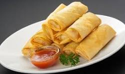

Ingredients
- 1 cup shredded cabbage
- 1 cup shredded carrots
- 1 cup bean sprouts
- 1/2 cup chopped bell peppers
- 1 tablespoon soy sauce
- Spring roll wrappers
- Oil for frying
- Salt to taste
Instructions
- Heat a tablespoon of oil in a pan and sauté cabbage, carrots, bell peppers, and bean sprouts for 2-3 minutes.
- Add soy sauce and salt, and mix well. Remove from heat and let cool.
- Place a small amount of the vegetable mixture in each spring roll wrapper and roll tightly.
- Heat oil in a deep pan and fry the spring rolls until golden brown.
- Drain on paper towels and serve hot with dipping sauce.
Nutritional Information
Calories: 150 per serving
Protein: 2g
Carbohydrates: 20g
Fat: 7g